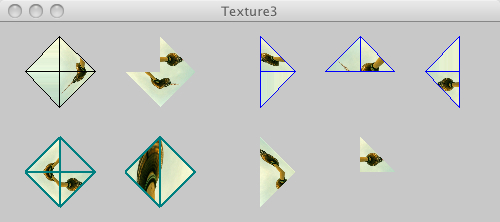

This page tests PJS textures

/* @pjs preload="berlin-1.jpg" */
import processing.opengl.*;
size(500, 200, P3D);
background(200);
PImage img = loadImage("berlin-1.jpg");
size(500, 200, P3D);
background(200);
textureMode(NORMALIZED);
beginShape(TRIANGLE_FAN);
texture(img);
vertex(60, 50, 0, 0, 0);
vertex(60, 15, 0, 0, 1);
vertex(95, 50, 0, 1, 1);
vertex(60, 85, 0, 1, 0);
vertex(25, 50, 0, 0, 0);
vertex(60, 15, 0, 0, 1);
endShape();
noStroke();
beginShape(TRIANGLE_FAN);
texture(img);
vertex(160, 50, 0, 1, 1);
vertex(160, 15, 0, 0, 1);
vertex(195, 50, 0, 1, 0);
vertex(160, 85, 0, 0, 0);
vertex(125, 50, 0, 0, 1);
endShape();
stroke(0,0,255);
beginShape(TRIANGLE_FAN);
texture(img);
vertex(260, 50, 0, 1, 0);
vertex(260, 15, 0, 0, 1);
vertex(295, 50, 0, 1, 1);
vertex(260, 85, 0, 1, 0);
vertex(260, 15, 0, 0, 0);
endShape();
beginShape(TRIANGLE_FAN);
texture(img);
vertex(360, 50, 0, 0.5, 0.5);
vertex(360, 15, 0, 0, 1);
vertex(395, 50, 0, 1, 1);
vertex(325, 50, 0, 1, 0);
vertex(360, 15, 0, 0, 0);
endShape();
beginShape(TRIANGLE_FAN);
texture(img);
vertex(460, 50, 0, 1, 1);
vertex(460, 15, 0, 0, 0);
vertex(460, 85, 0, 0, 1);
vertex(425, 50, 0, 1, 0);
vertex(460, 15, 0, 1, 1);
endShape();
strokeWeight(2);
stroke(0,128,128);
beginShape(TRIANGLE_FAN);
texture(img);
vertex(60, 150, 0, 1, 1);
vertex(95, 150, 0, 1, 0);
vertex(60, 185, 0, 0, 1);
vertex(25, 150, 0, 0, 0);
vertex(60, 115, 0, 0, 1);
endShape();
beginShape(TRIANGLE_FAN);
texture(img);
vertex(160, 115, 0, 0.5, 0.5);
vertex(195, 150, 0, 0, 1);
vertex(160, 185, 0, 0.5, 1);
vertex(125, 150, 0, 1, 0.5);
vertex(160, 115, 0, 1, 1);
endShape();
noStroke();
beginShape(TRIANGLE_FAN);
texture(img);
vertex(260, 150, 0, 0, 1);
vertex(260, 115, 0, 1, 0);
vertex(295, 150, 0, 1, 1);
vertex(260, 185, 0, 0, 0);
endShape();
noStroke();
beginShape(TRIANGLE_FAN);
texture(img);
vertex(360, 150, 0, 1, 1);
vertex(360, 115, 0, 0, 1);
vertex(395, 150, 0, 1, 0);
endShape();
beginShape(TRIANGLE_FAN);
texture(img);
vertex(460, 150, 0, 1, 1);
vertex(460, 115, 0, 0, 0);
endShape();